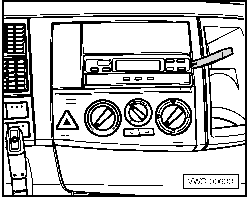

|
MÓDULO DE COMANDO DO MOTOR -EDC

|
Tacógrafo - Remover e instalar
 
| ATENÇÃO!
Antes
de realizar quaisquer trabalhos no sistema elétrico, é necessário
desconectar a bateria, iniciando primeiramente pelo cabo negativo (-). |

|
NOTA!
Ao
ligar novamente a bateria, verificar os equipamentos do veículo (rádio,
relógio, travas elétricas, vidros elétricos, etc.) de acordo com o
manual de reparação e/ou as instruções de utilização.
|

Remoção
Colocar
etiquetas e/ou identificar os conectores de todas as conexões elétricas
à medida que forem removidas, para identificar suas localizações e
facilitar a instalação posterior.
- Com o auxílio de uma espátula plástica, desencaixar e puxar o tacógrafo.

- Desconectar os conectores e remover o tacógrafo de seu alojamento.
Instalação
- Conectar os conectores e instalar o tacógrafo encaixando-o em seu alojamento.
|